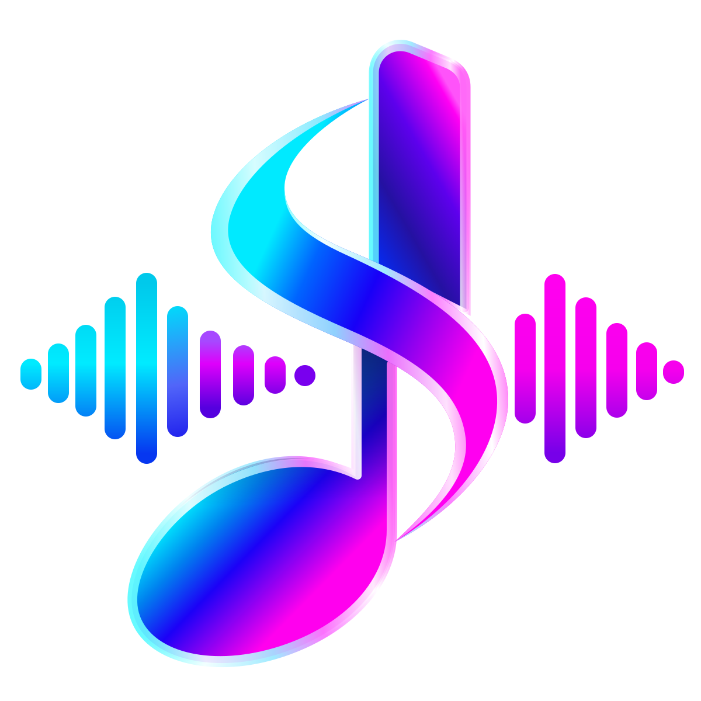

Capture sua voz
Grave pelo microfone ou importe um instrumental para acompanhar sua interpretação.
PROJETO 03 / EM DESENVOLVIMENTO
Um estúdio de áudio multipista para gravar, experimentar ritmos e construir mixagens diretamente no dispositivo.

VOZ / MIXAGEMA direção
Sonetom aproxima gravação e produção musical, com controles de áudio e perfis de ritmo em uma experiência acessível.
Grave pelo microfone ou importe um instrumental para acompanhar sua interpretação.
Explore volume, panorama, equalização, compressão e reverberação.
Experimente perfis de ritmo e escute a mixagem sem sair do estúdio.
Onde estamos
O protótipo permite explorar a gravação e a mixagem. A demonstração não exige conta nem oferece exportação.
Gravação, reprodução e controles de faixa.
Perfis de ritmo e refinamento da mixagem.
Novos recursos e aperfeiçoamento do processamento de áudio.
Sem login. Sem exportação. Suas gravações ficam apenas nesta sessão.
Experimente